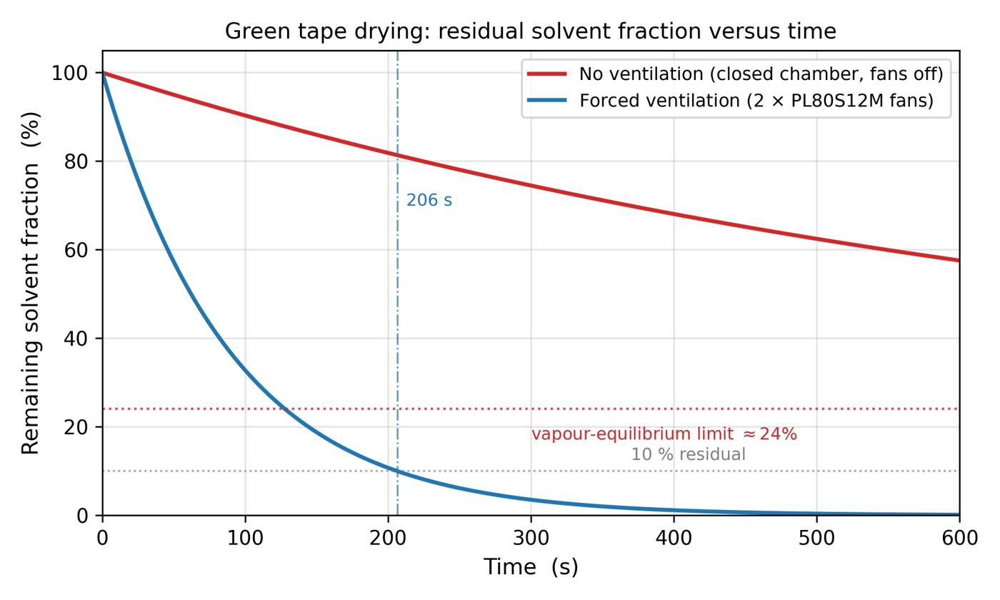
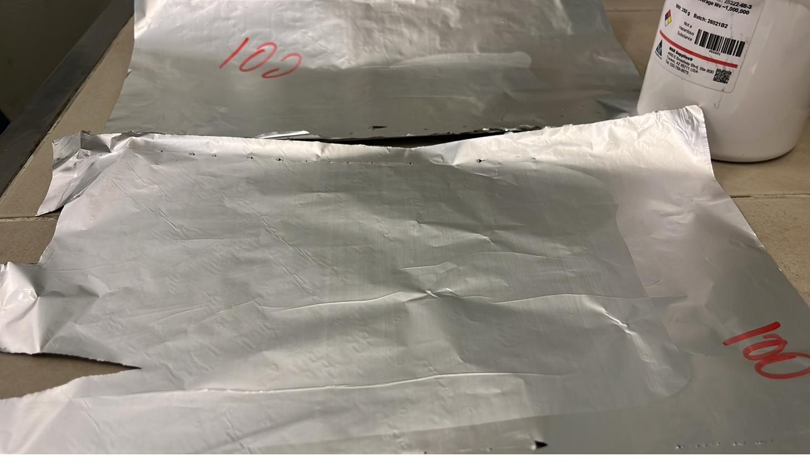
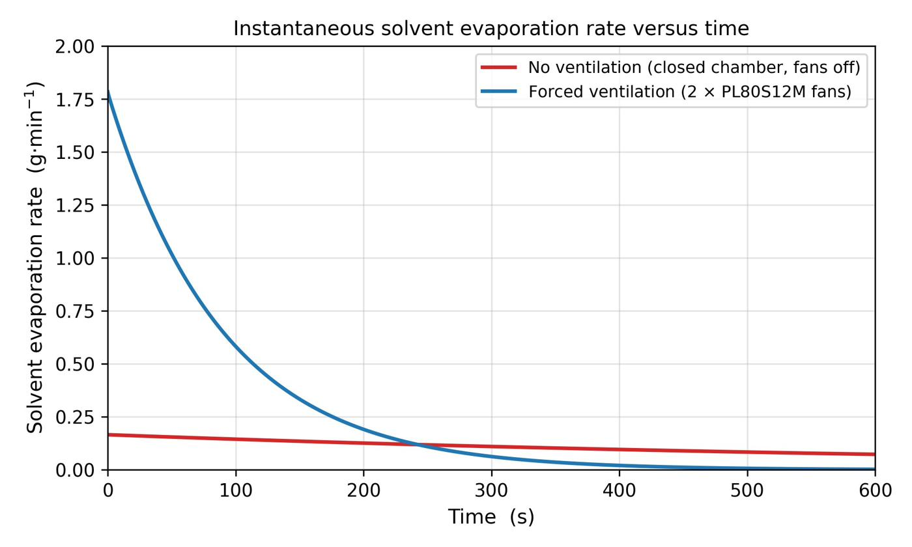
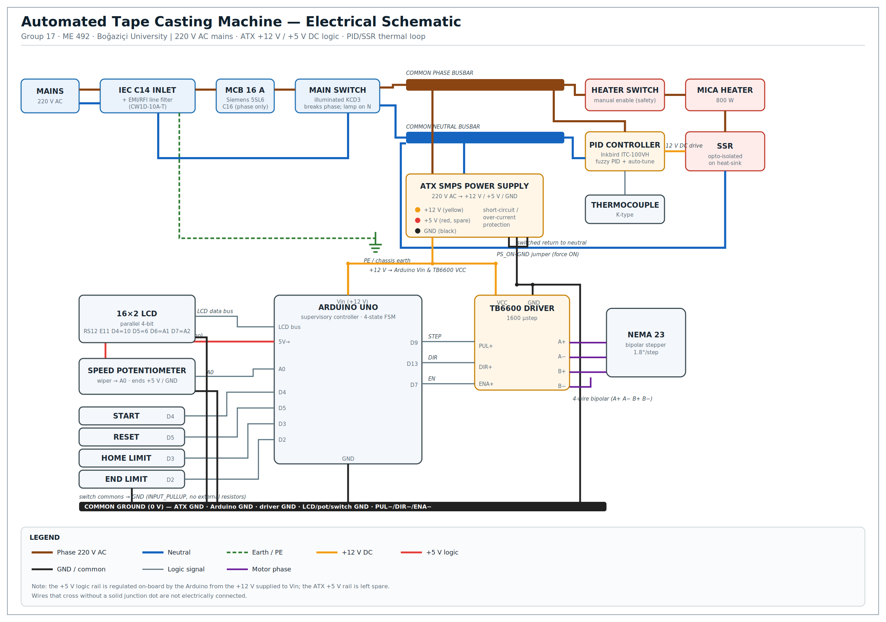

03 — The analysis behind it
Modelled, then confirmed.

FIG. 04 — Residual solvent vs. time: sealed stall vs. ventilated drying

FIG. 05 — Evaporation rate vs. time, forced-convection model
The prototype wasn’t just assembled — it was measured against its own specifications, and it met them: velocity, thermal uniformity, drying, and physical casting all confirmed.
Casting runs at different gap settings produced continuous, controllable wet films — the end-to-end proof that the mechanism does what the model predicted.



Direct timing experiments confirmed no measurable deviation between predicted and observed carriage speeds across 2–45 mm/s. The velocity-locking firmware held constant shear through every stroke, and the four-state machine ran deterministically — eliminating the stutter of earlier versions.
The model fixed the usable gap at 0.20–0.55 mm for 100–300 µm wet films. A sensitivity analysis showed a 5% speed error produces >±5 µm thickness scatter at low speeds — proving the 10 µm micrometer resolution and microstepping drive are functional necessities, not over-engineering.
A 2-D finite-difference simulation plus experimental calibration kept thermocouple error below 1 °C and peak-to-valley surface non-uniformity under ~0.5 °C. The matched-expansion aluminium pair prevented interface-gap degradation; PTFE feet isolated the MDF base from the heat.
Sealed, the chamber stalls at ~24% residual solvent forever. Ventilated, the mass-transfer coefficient rises ~10× and the film dries in ~400 s. The same model showed the sealed chamber would breach ethanol’s explosive limit in ~90 s — making extraction safety-critical.

The project successfully designed, analysed, and manufactured a fully functional automated tape casting machine for NASICON solid-electrolyte green tapes. The completed prototype satisfies the dimensional precision, thermal uniformity, velocity stability, solvent safety, and cost-effectiveness criteria set in the Product Design Specifications — and its operational capability was confirmed by physical casting trials.
A non-contact laser displacement gauge downstream of the blade would enable real-time, closed-loop thickness monitoring — and an overhead machine-vision pipeline could auto-detect pinholes and streaks.
The full loop — cast and sinter a <100 µm green tape, then measure its ionic conductivity by impedance spectroscopy — is the final validation of the machine’s research utility.
An anodized-aluminium chassis, a soldered PCB or busbar for power distribution, chuck lapping to 5 µm flatness, and a 24–36 V drive supply to push casting toward 100 mm/s.